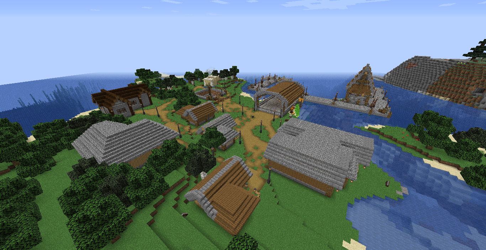
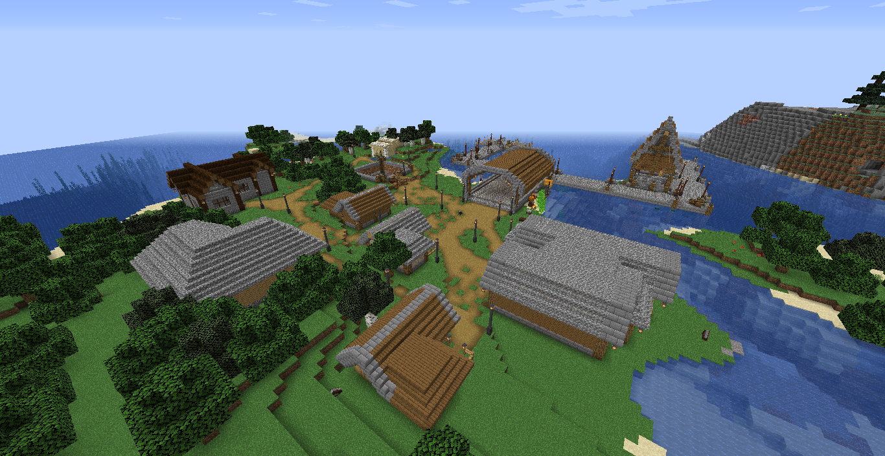

Этаж "рпс": (этаж сущности) Этаж новых процветающих стран Страна 1 ( name lost ) крупнейшая в округе процветающая страна науки, инженерии и производства во главе ###. союз со страной ( name lost ) во главе булка . Союз со страной "риспания" Во главе енот.
Договоры : Страна ( name lost )
Страна2"аркалис" прочеветающяя страна во главе подземной лисы "уильем лоунсонс" довольно разумный глава страны в которой каждый помогает друг другу также успешно отстояла нападение от страны булки.
Союз : с страной ( name lost ) Нейтралитет : риспания ( name lost ) Нейтралитет и вражда : Аркакрыс
Договоры : договор с страной ( name lost )
Страна 3 "аркакрыс" увы не очень процветающая страна Когда-то состоявшая в близких отношениях и слиянии с страной "аркалис" название которой тоже было украдено главой страны "аркакрыс" во главе которой крыса.
Союз : неизвестно Нейтралитет : неизвестен
Договоры : lost
Страна 4 ( name lost ) Info lost
♦️внимание♦️ На данном этаже была обнаружена аномалия в последствии разлом, аномалия исчезла после уничтожения сущностей пришедших из разлома
Мгновение : местоположение аркалис и торговыйгород
Статус : ренкарнирован и зоморожен Конец отчёта.
 
